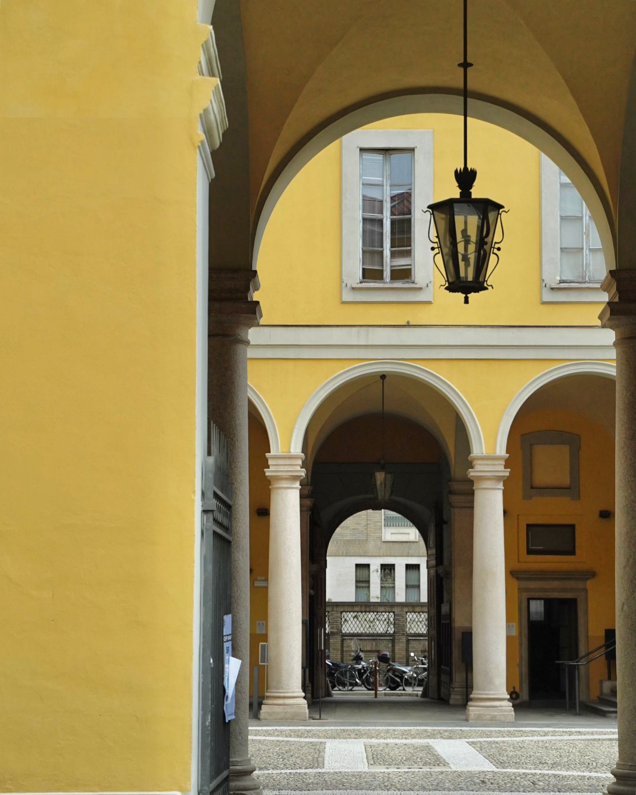

The Master's Degree in Corporate Communication at the University of Milan provides students with advanced knowledge in communication strategies, digital media, marketing, public relations and corporate reputation.
The programme combines theoretical knowledge with practical activities, helping students understand how organisations communicate with different audiences in a constantly changing digital environment.
Studying in Milan also offers the opportunity to experience one of Italy's most dynamic cities for communication, media, fashion and business.
University of Milan
Via Conservatorio 7
20122 Milano
By metro
M1 Red Line – San Babila
M4 Blue Line – San Babila
By public transport
Bus 54 and 61
“The programme gave me a strong mix of theory and practical skills. I especially appreciated the international environment and the focus on digital communication.”
“Studying in Milan is a great opportunity. The course is closely connected to communication, media and business, and the classes are very stimulating.”
“I found the programme useful for understanding how organisations communicate with different audiences. It also helped me develop practical and strategic skills.”